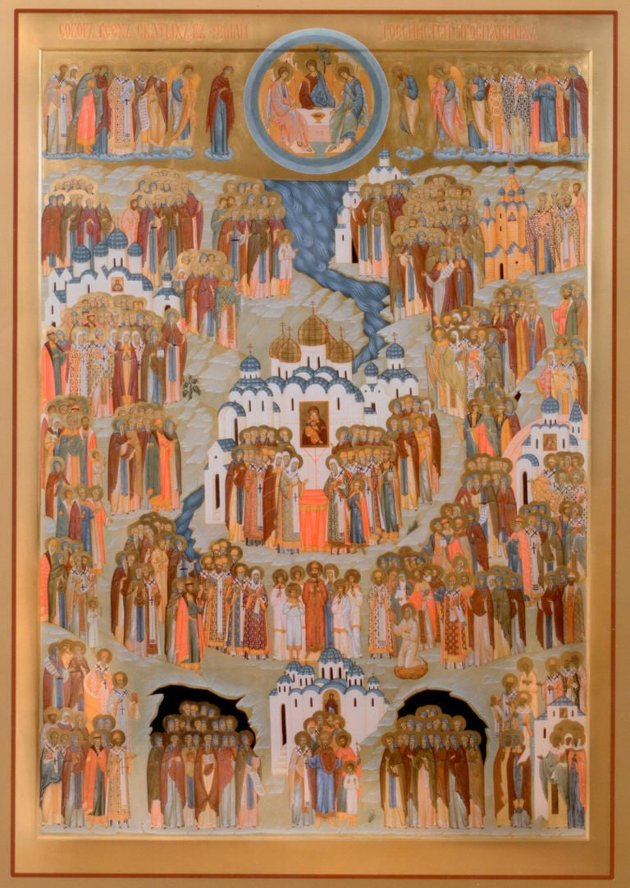

Расписание богослужений
О храме
Новости
Проповеди
Духовно-просветительский центр
Икона храма
Контакты
Расписание богослужений
О храме
Новости
Проповеди
Духовно-просветительский центр
Икона храма
Контакты
Расписание богослужений
О храме
Новости
Проповеди
Духовно-просветительский центр
Икона храма
Контакты
Расписание богослужений
О храме
Новости
Проповеди
Духовно-просветительский центр
Икона храма
Контакты
Композиция иконы «Всех святых, в земле Русской просиявших» разработана в 1930-х годах священноисповедником Афанасием (Сахаровым) и воплощена в жизнь монахиней Иулианией (Соколовой). Икона «Всех святых в Земле Русской просиявших» необычна. Обычно святые изображаются окруженные золотым или фоном. Этот фон символически указывает, что Божии избранники только образно являются в нашем грешном мире, в реальности же они вечно пребывают в Царстве Небесном. Земля изображается только тогда, когда икона рассказывает о пребывании Бога на земле: о Его Рождестве, Крещении, Втором Пришествии для Страшного Суда, — ведь где Бог, там и Небо. Икона «Всех святых в Земле Русской просиявших» своей необычной композицией свидетельствует: Бог с Россией! Святые угодники не покинули Русскую Землю. Своим присутствием, своими молитвами они наполняют ее благодатью Святого Духа, делают «Святой Русью», которая жива и неотделима от Пресвятой Троицы.
Внизу иконы изображен равноапостольный Владимир, вместе со своей семьей – святой бабкой, княгиней Ольгой, сыновьями-страстотерпцами Борисом и Глебом и другими киевскими святыми – изображен в самом низу по центру как бы внутри древнейшего русского храма – Киевской Софии. Это место соответствует месту символического корня духовного древа русской святости. С двух сторон от него в темных пещерах – киево-печерские преподобные. В Киево-Печерском монастыре мощи святых монахов покоятся в двух пещерных комплексах – Ближних и Дальних пещерах. Слева изображены святые Ближних пещер, и впереди всех – прп. Антоний Печерский, основатель русского отшельнического монашества. Справа – святые Дальних пещер. Первым среди них стоит прп. Феодосий Печерский – основатель русского общежительного монашества. Святые Киево-Печерского монастыря, вместе с киевскими святыми и равноапостольным Владимиром являют собою фундамент символического храма русской святости, знаменуют начало домостроительства Духа Святого на Русской Земле.
Над киевскими святыми, ровно по оси куполов Киевской Софии и московского Успенского собора изображен на возвышении царь-страстотерпец Николай II в окружении семьи. С двух сторон от царственных мучеников стоит сонм новомучеников: святых, отдавших жизни за свои христианские убеждения в годы безбожных гонений XX века. Несмотря на то, что святые новомученики совсем недавно вошли в сонм русских святых, их место внизу иконы. Они своей кровью укрепляют фундамент храма русской святости.
Слева от собора киево-печерских преподобных изображены святые южной Руси, черниговские князья-мученики Михаил и Феодор, переяславские и волынские чудотворцы с преподобным Иовом Почаевским. Справа от Москвы — святая Троице-Сергиева Лавра с преподобным Сергием Радонежским и его ближайшими учениками. Выше стоят святые, утверждавшие православие в Смоленске, Бресте, Белостоке, Литве. Обилием святых на северо-западе Отечества прославились Новгородская и Псковская епархии. Крону великого русского древа образует Северная Фиваида, так образно называются монастыри северных русских земель. Слева направо в верхней части иконы изображены петроградские, олонецкие, белозерские, архангелогородские, соловецкие, вологодские и пермские угодники Божии.
В правом нижнем углу начинает свой рост ветвь святых русского православного востока. В самом низу мы видим изображение святых древних Церквей Кавказа: Иверии, Грузии и Армении. Выше предстоят в молении Христу сонмы тамбовских, сибирских и казанских чудотворцев. Казанская явленная чудотворная икона Богоматери осеняет восток Святой Руси. Над ними – все святые среднерусских земель: угодники Ростова и Ярославля, Углича и Суздаля, Мурома и Костромы, Твери и Рязани, древнего Владимира и Переславля Залесского.
Русская земля, населенная святыми, поднимается до самых облаков, до Небесного Иерусалима, где, освященные золотым светом Божественной Славы, предстоят Престолу Святой Троицы Пречистая Богородица и святой Иоанн Креститель, святые архангелы Михаил и Гавриил, апостолы Варфоломей и Андрей, святители Фотий и семь Херсонских священномучеников, великомученики Георгий и Димитрий Солунский, святитель Николай Мирликийский и просветители словенские Кирилл и Мефодий, а также множество иных угодников, так или иначе исторически связанных с Русской Церковью. Они молятся вместе со святыми Русской земли за всех живущих на ней, за каждого, праведного и грешного, верующего и неверующего, за всякого человека, кто ходит по нашей освященной кровью мучеников, отмоленной у Господа и напоенной благодатью Духа Святого Русской Земле.

Тропарь, глас 8:
Якоже плод красный Твоего спасительнаго сеяния, / земля Русская приносит Ти, Господи, вся святыя, в той просиявшия. / Тех молитвами в мире глубоце // Церковь и страну нашу Богородицею соблюди, Многомилостиве.
Кондак, глас 3:
Днесь лик святых, в земли нашей Богу угодивших, предстоит в Церкви / и невидимо за ны молится Богу. / Ангели с ним славословят, / и вси святии Церкве Христовы ему спразднуют, / о нас бо молят вси купно // Превечнаго Бога.
Молитва
О всеблаженнии и богомудрии угодницы Божии, подвиги своими землю Русскую освятившии и телеса своя, яко семя веры, в ней оставльшии, душами же своими Престолу Божию предстоящии и непрестанно о ней молящиися! Се ныне, в день общаго вашего торжества, мы, грешнии, меньшии братия ваши, дерзаем приносити вам сие хвалебное пение. Величаем ваша великия подвиги, духовнии воини Христови, терпением и мужеством до конца врага низложившии и нас от прелести и козней его избавляющии. Ублажаем ваше святое житие, светильницы Божественнии, светом веры и добродетелей светящиися и наша умы и сердца богомудренно озаряющии. Прославляем ваша великая чудеса, цвети райстии, в стране нашей северней прекрасне процветшии и ароматы дарований и чудес повсюду благоухающии. Восхваляем вашу богоподражательную любовь, предстателие наши и покровителие, и, уповающе на помощь вашу, припадаем к вам и вопием: вси святии сродницы наши, от лет древних просиявшии и в последния дни подвизавшиися, явленнии и неявленнии, ведомии и неведомии! Помяните нашу немощь и уничижение и молитвами вашими испросите у Христа Бога нашего, да и мы, безбедно преплывше житейскую пучину и невредимо соблюдше сокровище веры, в пристанище вечнаго спасения достигнем и в блаженных обителех Горняго отечества вкупе с вами и со всеми угодившими Ему от века святыми водворимся благодатию и человеколюбием Спасителя нашего Господа Иисуса Христа, Емуже со Превечным Отцем и со Пресвятым Духом подобает непрестанное славословие и поклонение от всех тварей во веки веков. Аминь.
Величание Пресвятой Троице
Величаем Тя,/ Триипостасный Владыко,/ верою православною землю Русскую озарившаго/ и святых сродников наших // сонм велий в ней прославльшаго.
Величание Пресвятой Богородице
Достойно есть величати Тя,/ Богородице,/ земли Русския Царицу Небесную/ и людей православных// Владычицу Державную.
Величание святым
Величаем вас, святии вси, в земли Русской просиявшии, и чтим святую память вашу, вы бо молите о нас Христа, Бога нашего.
.